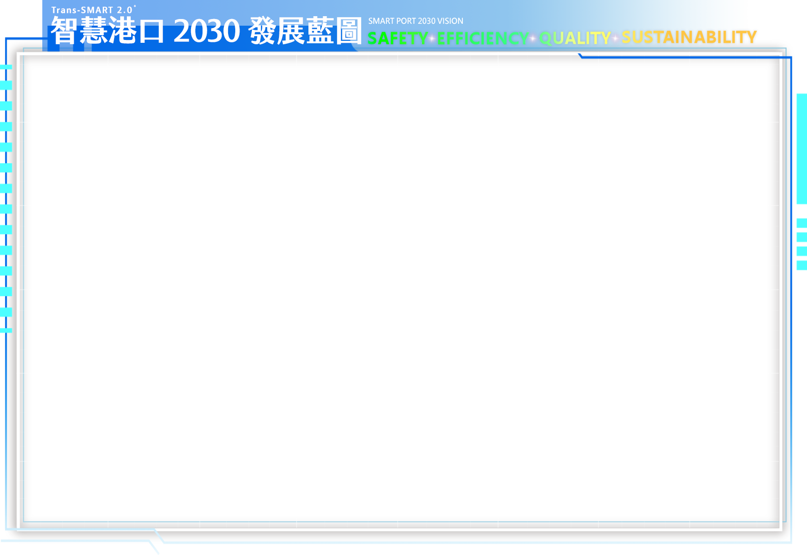

物聯網海象即時系統
佈建海氣象感測設備，提供港區業者即時掌握港口即時風力、波浪、海流、潮位、能見度資訊，優化港口作業安全。
智慧環境管理系統
推動綠港平台、危險品管理系統、港灣構造物維護系統建置，即時掌握港口營運動態，強化港口管理效能。
水下海事機器人
進行水下設施物、碼頭岸壁等檢測維修作業，優化港口作業安全。
水上無人載具應用服務
無人載具於港口進行環境數據收集、水域垃圾油污清理作業，提升港口服務品質。
無人機港區環境巡檢
以無人機自主飛行方式執行巡檢任務，並透過AI影像判讀分析告警訊息，強化港口管理效能。
船舶操航智慧警示輔助系統
串聯雷達、AIS及相關感測設備，規劃船舶虛擬安全航道，提升船舶航行安全。
無人車港口巡檢服務
應用無人車於封閉場域進行道路、環境巡檢作業，強化場域管理效能。
智慧能源管理系統建置
感測港區及建築物能源使用狀況，因應環境變化自動調整運轉模式，降低能源耗損。
智慧商情平台
串聯港口重要營運數據資訊，導入視覺化管理儀表板，輔助港口營運決策模式。
智慧監控管理系統
整合臺灣港群CCTV影像，並導入AI影像辨識偵測港區異常動態主動告警，強化港口管理效能。
智慧旅運系統
感測旅運場站人流數量，提供即時旅運交通服務訊息，提升旅運服務品質。
智慧戰情中心
以港口3D視覺化圖層結合營運管理資訊，掌握港口即時動態，優化臺灣港群管理效率。